Для операторов, аудиторов и всех, кто работает с хостами через веб-интерфейс: проверки и обновления Linux, уязвимости, файлы, терминал и RDP, история.
Версия 0.7.9 · ноябрь 2026 Настройка сервиса, права и наблюдение за сеансами — в «Руководстве администратора».
Содержание
Что это и как устроено
Вход и выход
Шапка и вкладки
Actions — проверки и изменения
Vulnerabilities — уязвимости
SSH Files — файлы на хосте
Connections — терминал и RDP
History — что и когда запускали
Настройки: тема
Частые вопросы
1. Что это и как устроено
LinuxOps Web — веб-сервис для обслуживания серверов Linux и Windows. Всё работает в браузере, на свой компьютер ничего ставить не нужно.
К хостам подключается сервер LinuxOps Web, а не ваш компьютер. Пароли и ключи хранятся на сервере в зашифрованном виде и в браузер не передаются.
Что вам доступно, определяет роль: на всё, на папку или на отдельный хост. Вкладки и кнопки без прав скрыты или неактивны.
Все действия попадают в аудит. Терминалы и RDP записываются: экран и текст терминала.
Встроенные роли: Оператор — проверки, изменения, терминал, RDP, файлы; Аудитор — проверки только на чтение, файлы на чтение, журнал аудита и записи сеансов; Просмотр — только хосты и результаты. Администратор может завести и свои роли.
2. Вход и выход
Откройте адрес сервиса, который дал администратор, например https://linuxops-web/. Введите логин и пароль:
учётка домена — логин AD, без домена или в виде user@domain;
локальная учётка сервиса — если администратор её завёл.
Если включён второй фактор, после пароля сервис попросит подтвердить вход в приложении MK 2FA или ввести код TOTP.
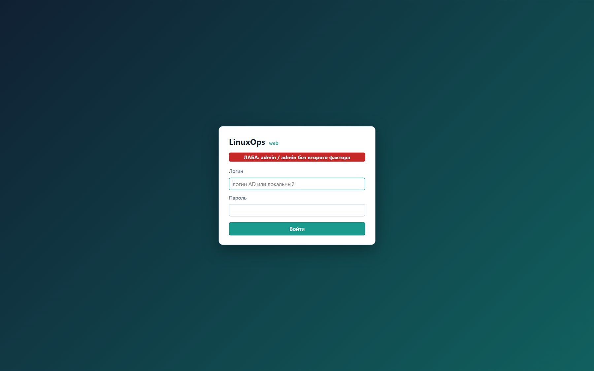
Окно входа. Красная плашка «ЛАБА» видна только на лабораторном стенде.
Выход — кнопка ⏻ в шапке.
Простой. Если окно не используется дольше заданного времени (по умолчанию 30 минут), сервис выйдет сам. Общий срок входа по умолчанию — 10 часов.
Смена пароля — только для локальных учёток: щелчок по своему имени в шапке. Понадобятся текущий пароль и код TOTP. После смены пароля закрываются все входы этой учётки, в том числе текущий. Пароль доменной учётки меняется в AD, как обычно.
3. Шапка и вкладки
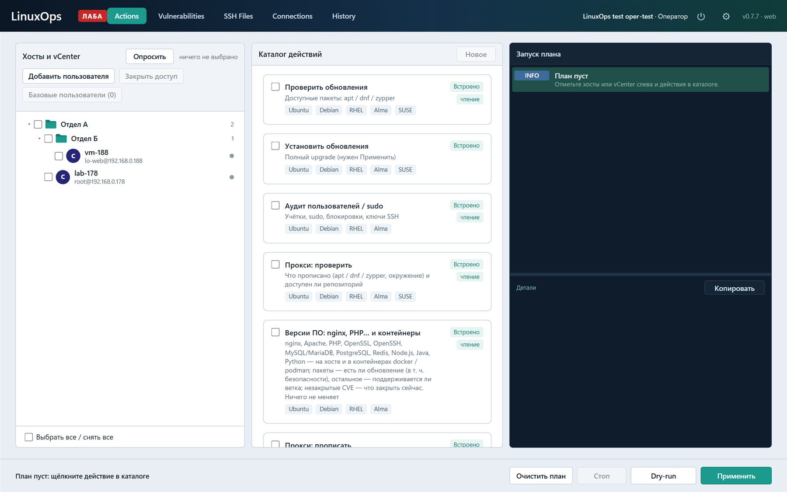
Главное окно под ролью «Оператор». Справа в шапке — имя и роль, кнопки «Выход» и «Настройки», версия сервиса.
Вкладка
Что там
Actions
Выбрать хосты и действия, запустить проверку (Dry-run) или изменения (Применить), посмотреть результат.
Vulnerabilities
Версии ПО и CVE по всем вашим хостам, что закрыть в первую очередь.
SSH Files
Файлы на хосте: просмотр, скачивание, загрузка.
Connections
Терминал SSH к Linux и RDP к Windows прямо в браузере.
History
Все запуски: когда, кто, на каком хосте, с каким итогом.
Вкладки Inventory и PowerShell видны только администраторам.
4. Actions — проверки и изменения
4.1. Собрать план
Слева отметьте хосты. Галка на папке отмечает все её хосты. Щелчок по треугольнику сворачивает папку. Кнопка Опросить обновляет дистрибутив и статус выбранных хостов.
В Каталоге действий щёлкните нужные карточки. Выбранные выделяются рамкой. Метка чтение значит, что действие ничего не меняет на хосте. Метки дистрибутивов показывают, где действие поддерживается.
Справа, в Запуске плана, сразу видно, что войдёт в запуск. Внизу — итог плана в одну строку.
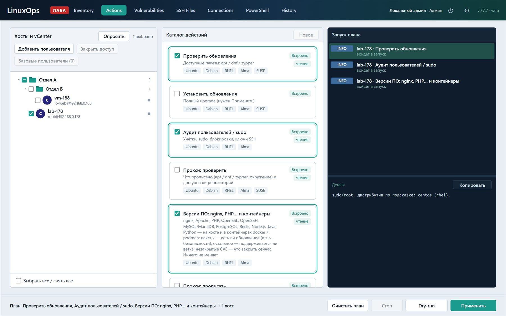
Выбран хост lab-178 и три действия только на чтение.
4.2. Dry-run или Применить
Кнопка
Что делает
Dry-run
Действия «на чтение» выполняются как обычно. Меняющие действия только строят план: что было бы сделано. На хостах ничего не меняется.
Применить
Меняющие действия выполняются на хостах: установка обновлений, прокси, пользователи. Нужна роль с правом «Применить».
Стоп
Остановить запуск. То, что уже выполняется на хосте, доработает.
Очистить план
Снять все действия и результаты.
Если у действий есть параметры, перед запуском откроется окно Параметры действий. Под каждой галкой — что она включает и что уходит наружу. Последние значения запоминаются до закрытия страницы.
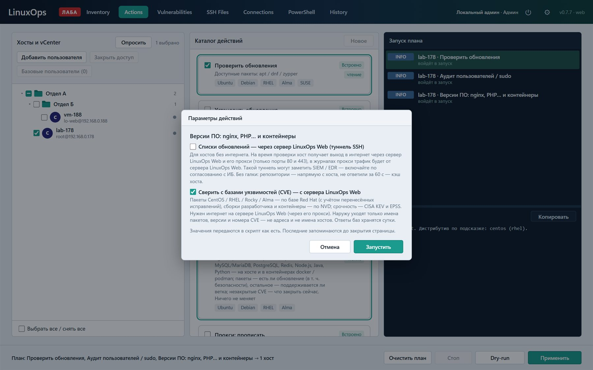
Параметры «Версий ПО»: туннель для списков обновлений через сервер и сверка с базами CVE.
4.3. Результат
Сначала идёт строка Pre-flight: связь по SSH и определённый дистрибутив. Затем по строке на каждую пару «хост · действие» со статусом: OK, WARN (есть на что посмотреть) или FAIL. Щелчок по строке открывает подробности внизу:
Таблица / Текст — разобранная таблица или исходный вывод;
Копировать — подробности в буфер обмена.
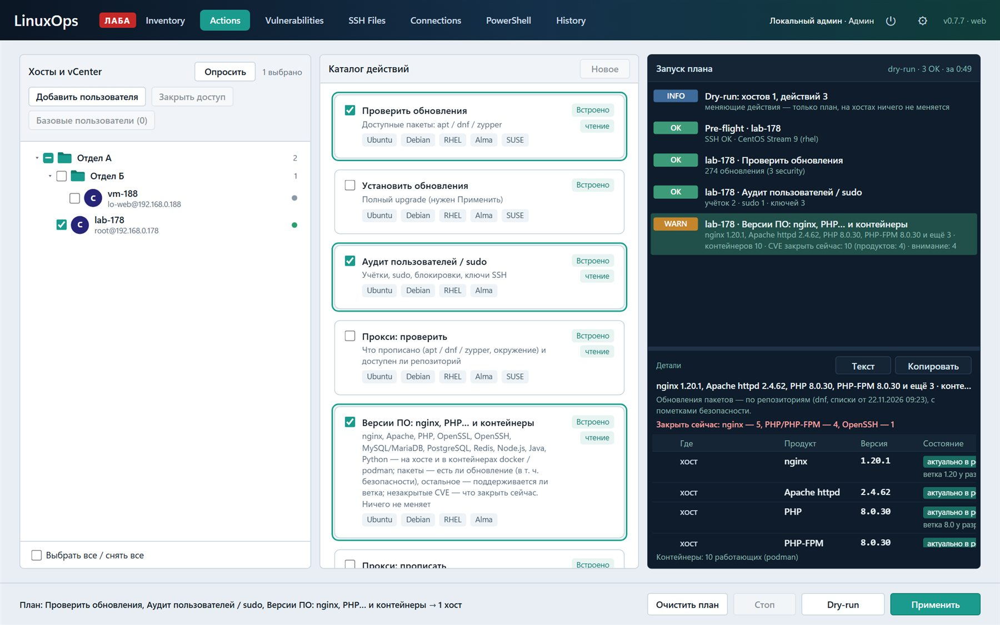
Dry-run на одном хосте. Открыты подробности «Версий ПО»: продукты, версии и состояние.
4.4. Добавить пользователя
Кнопка Добавить пользователя заводит учётку на выбранных хостах: логин, при желании sudo, открытый ключ SSH (вставить или Файл…) и/или пароль. Нужно право «Применить».
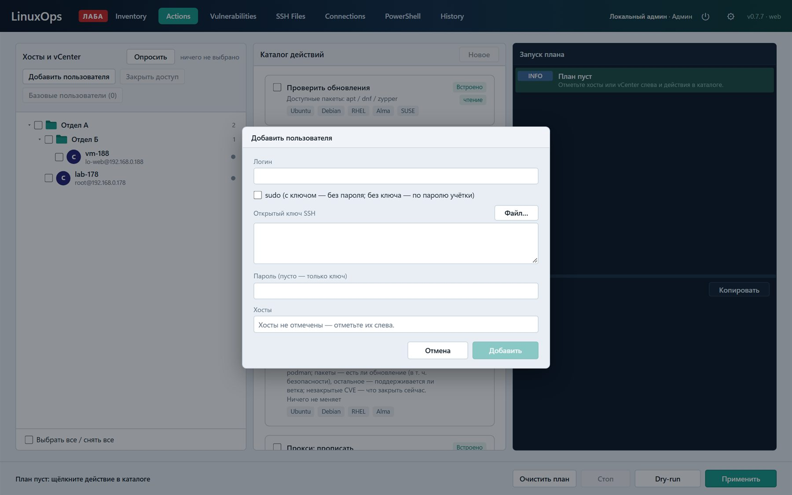
Окно «Добавить пользователя». Хосты берутся из отмеченных слева.
Кнопки «Закрыть доступ», «Базовые пользователи» и «Новое» (свои действия) пока неактивны. Они появятся в следующих версиях.
5. Vulnerabilities — уязвимости
Здесь собраны последние результаты «Версий ПО» по каждому хосту: из Actions, из API или из ночной проверки по расписанию.
Столбец
Значение
Проверено, Кто
Когда и кем (или по расписанию) хост проверялся последний раз.
Закрыть
Число CVE, которые нужно закрыть сейчас.
Обновл.
Доступные обновления пакетов, в скобках — обновления безопасности.
Вним.
Строки, требующие внимания: ветка без поддержки, есть новая версия и т. п.
CVE попадает в «закрыть сейчас», если она:
есть в каталоге CISA KEV (реально атакуется), или
имеет EPSS ≥ 10 %, или
имеет CVSS ≥ 9 и атакуется по сети.
Щелчок по хосту открывает справа продукты, версии и номера CVE.
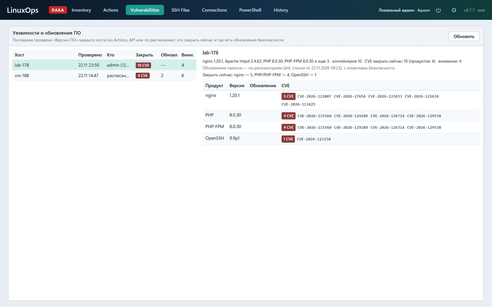
По lab-178 закрыть сейчас 10 CVE в четырёх продуктах.
Для пакетов CentOS / RHEL / Rocky / Alma учитываются перенесённые исправления Red Hat: старая версия с заплаткой не считается уязвимой. Если база не ответила, у продукта в колонке CVE будет «не проверены — база не ответила», а в сводке — список непроверенного; причину (например, «прокси сервера не задан») покажет строка «Связь с базами». Для контейнеров и собранного вручную видно и последний выпуск ветки: «ветка 3.12 поддерживается · есть 3.12.16».
Строки с «расписание» в столбце «Кто» — ночная проверка: она идёт без окна параметров, с настройками администратора.
6. SSH Files — файлы на хосте
Выберите хост слева и нажмите Открыть (или дважды щёлкните по хосту).
Для перехода используйте папки, ↑ (вверх) и ⌂ (домашняя папка) или впишите путь и нажмите Enter.
Скачать — выбранный файл на ваш компьютер. Загрузить… — файл с компьютера в текущую папку. Для загрузки нужно право «Файлы: запись».
Правая кнопка по строке — меню: Открыть (папка), Изменить (или Просмотр, если права «Файлы: запись» нет), Скачать, Копировать путь.
Папки — над файлами; щелчок по заголовку колонки — сортировка по ней (повторный — в обратную сторону).
Папка закрыта для пользователя SSH (/root, /etc/ssh/sshd_config.d) — список показывается через sudo, если у хоста включён sudo и есть право «Файлы: запись». Файлы в ней открываются только на правку; скачать и загрузить туда нельзя.
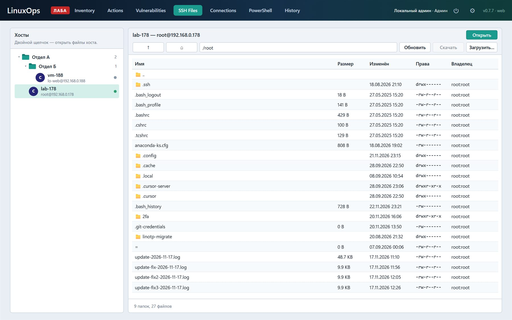
Домашняя папка root на lab-178: размер, дата, права, владелец.
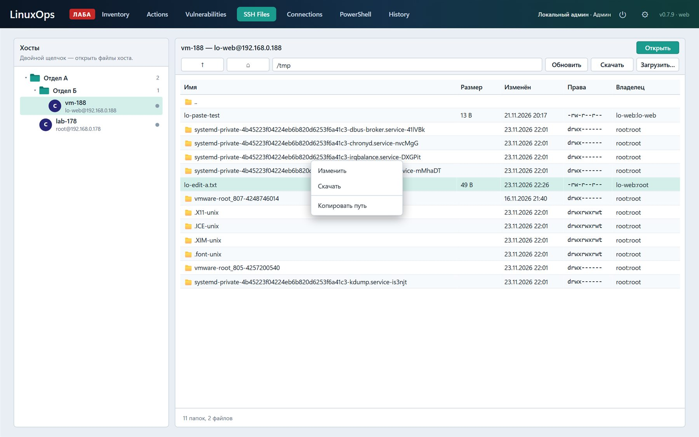
Правая кнопка по файлу.
Правка текстового файла
Открываются текстовые файлы до 2 МБ в UTF-8. Двоичный файл или другая кодировка — скачайте и правьте на компьютере.
Сохранить или Ctrl+S записывает файл на место: права, владелец и метка SELinux не меняются, переводы строк Windows сохраняются. Прежняя версия кладётся в ~/.linuxops-bak на хосте.
Нет прав на файл, а у хоста включён sudo — сервис прочитает и запишет его через sudo (в заголовке окна — «sudo»), копия — в ~root/.linuxops-bak. Файлы sudoers проверяются visudo до записи.
Если файл на хосте изменился после открытия, сервис спросит, перезаписать ли его. Закрыть окно с несохранённой правкой — тоже после вопроса. Каждое сохранение пишется в аудит.
Открытая папка и окно правки остаются на месте, пока вы на других вкладках.
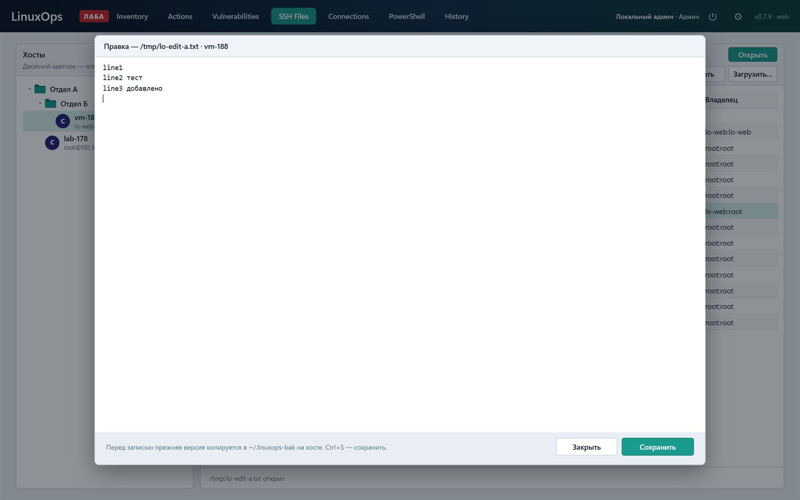
Правка /tmp/lo-edit-a.txt на vm-188.
7. Connections — терминал и RDP
Выберите хост и нажмите Подключиться (или дважды щёлкните по хосту). Каждый сеанс открывается в своей вкладке над экраном — как в настольной версии.
Linux (SSH) — терминал откроется сразу под учёткой, заданной для хоста в Inventory.
Windows (RDP) — сервис спросит вашу доменную учётку и пароль. Вход выполняется от вашего имени.
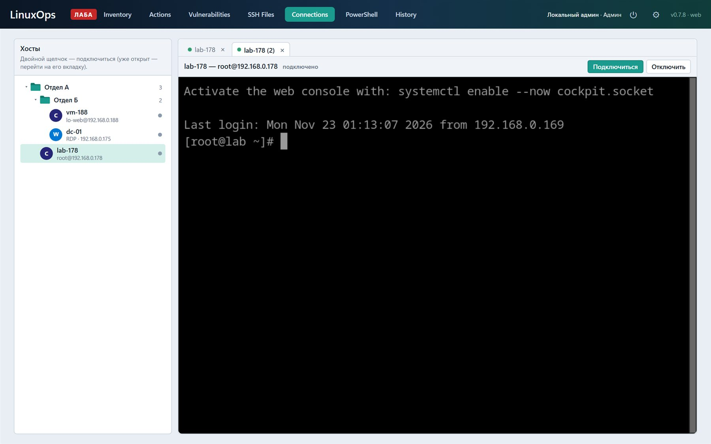
Два сеанса к lab-178 во вкладках. Справа — «Подключиться» и «Отключить».
Вкладки сеансов
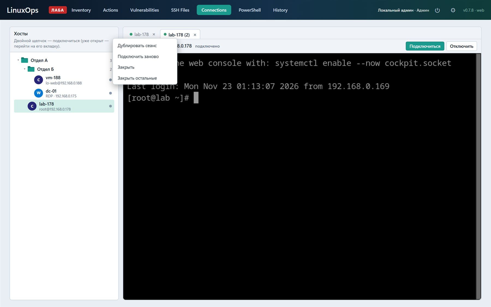
Правая кнопка по вкладке: дублировать, подключить заново, закрыть, закрыть остальные.
Двойной щелчок по хосту: если сеанс с ним уже открыт — переход на его вкладку (закрытый сеанс подключится заново), иначе — новая вкладка.
Второй сеанс к тому же хосту — правая кнопка по хосту → Новая вкладка с этим хостом или правая кнопка по вкладке → Дублировать сеанс. Вкладка получит номер: «lab-178 (2)».
Точка на вкладке: зелёная — подключено, жёлтая — подключается, серая — отключено.
Закрыть вкладку — ×, средняя кнопка мыши или меню вкладки («Закрыть», «Закрыть остальные»). Если сеанс подключён, сервис переспросит. Отключить закрывает соединение, но оставляет вкладку — к хосту можно подключиться снова.
Переход на другие вкладки сервиса (Actions, History…) сеансы не рвёт: вернётесь — всё на месте. Сеансы закрываются только при закрытии или перезагрузке окна браузера (F5).
Администратор может ограничить число одновременных сеансов на человека. При превышении появится «Открыто сеансов: N — это предел» — закройте ненужную вкладку.
Клавиатура работает, когда фокус на экране сеанса: щёлкните по нему.
Вставка:Ctrl+V (или Shift+Insert) вставляет текст из буфера вашего компьютера. Выделенное в сеансе попадает в буфер компьютера.
Размер экрана подстраивается под окно.
Если сеанс оборвался, в строке статуса будет причина. Например, «отключено: сеанс закрыт администратором» или «ключ хоста, сеть или учётка — подробности в History → Сеансы».
Все сеансы записываются: экран, а для SSH — ещё и текст терминала. Администратор может смотреть идущий сеанс вживую и закрыть его. Это фиксируется в аудите.
8. History — что и когда запускали
Список последних запусков Dry-run и Применить: время, режим, хост, действие, статус, кто запускал. Щелчок по строке показывает подробности результата. Обновить подтягивает новые запуски.
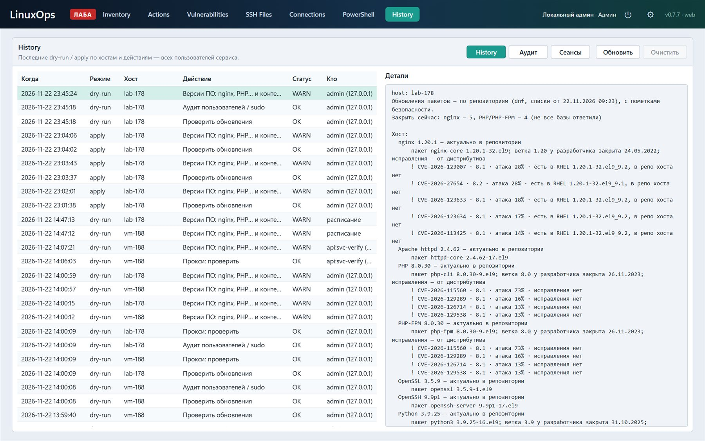
History: справа — подробности выбранного запуска.
С правом «аудит» в History появятся ещё кнопки Аудит и Сеансы. Они описаны в «Руководстве администратора».
9. Настройки: тема
Кнопка ⚙ в шапке. Пользователю доступна только тема оформления: «Как в системе», «Светлая» или «Тёмная». Выбор запоминается в этом браузере.
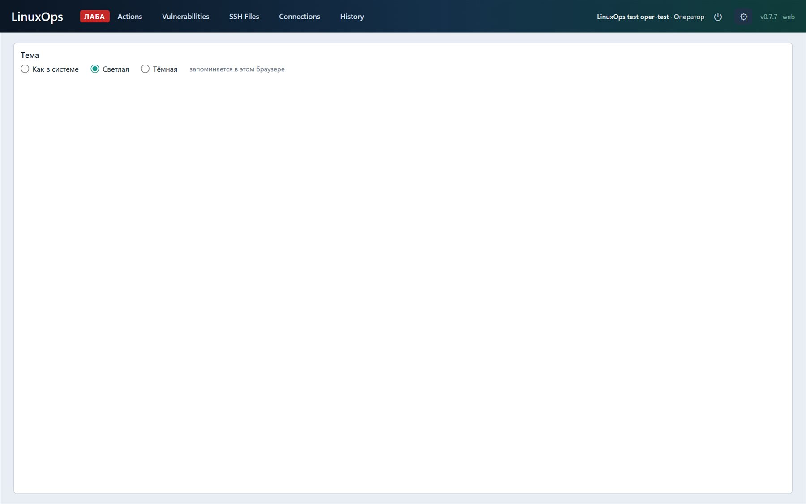
Настройки пользователя: только тема.
10. Частые вопросы
Вопрос
Ответ
Не вижу нужный хост
У вашей роли нет назначения на этот хост или его папку. Обратитесь к администратору LinuxOps Web.
Кнопка «Применить» неактивна
В вашей роли нет права «Применить». Dry-run при этом доступен.
Выкинуло из сервиса
Сработал простой или общий срок входа. Войдите заново.
Не открывается ещё один сеанс: «это предел»
Администратор ограничил число одновременных сеансов. Закройте ненужные вкладки — в этом и других окнах браузера.
Терминал пишет «ключ хоста изменился»
Хост переустановили или подменили. Сервис не подключится, пока администратор не подтвердит новый ключ в Inventory.
Во Vulnerabilities «не проверялся»
Запустите «Версии ПО» в Actions или дождитесь ночной проверки.
После обновления сервиса странно выглядит страница
Обновите страницу (F5). Сервис сам подтягивает свежие файлы.